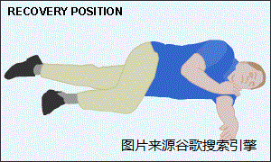

急救措施
1. 心脏骤停急救措施
2. 胸外按压及人工呼吸
3. 复苏姿势
4. 异物梗阻急救（海姆立克）
1.心脏骤停急救措施
心跳骤停的患者在4-6分钟后就会受到对器官不可逆的伤害。
心肺复苏通过人工保持脑部功能直到自然呼吸和血液循环回复。
患者心脏骤停的急救措施步骤：
- 评估现场安全，确认患者有无意识。
- 启动紧急医疗服务：拨打急救电话
- 检查脉搏与呼吸，不得超过10秒
- 开始胸外按压及人工呼吸。如有两名急救者在场，其中一人应进行心肺复苏，
另一名应拨打急救电话及取来除颤器，如有需要则根据除颤器的指令立即除颤
2.胸外按压及人工呼吸
2.1胸外按压：
解开衣领/上衣，找到两侧肋骨的连接处（剑突）
把掌心放在剑突两指上处
双手交叉，手臂伸直，手臂与身体呈90度
按压速度为一秒两下（100-120次/分钟）
按压深度为5cm
每次按压前确保胸部恢复原状
胸外按压需持续到救护人员到达或感到疲惫不能再继续
2.2人工呼吸:
如只有一位紧急救助者，人工呼吸可省略
如与胸外按压同时进行，并有氧气面罩，可以进行30:2的心肺复苏，即30次胸外按压，
2次吹气，每次吹气不可超过1秒，胸外按压的停顿不能超过10秒。如有双人急救，可在五周期后轮换进行胸外按压。
吹气时需让患者仰头以保持气道通畅
如患者有心跳但是没有呼吸，可进行人工呼吸，用氧气面罩给患者5-6秒吹气一次，
每两分钟需检查患者是否还有心跳，持续到救护人员到达或患者能自行呼吸
3.复苏姿势
如患者已回复呼吸及脉搏但未清醒，应将患者以复苏体位摆放，观察患者呼吸及脉搏，并留在现场协助患者直至救护人员到达

4.异物梗塞的急救措施（哈姆立克急救）
如患者意识没有丧失，气道部分堵塞：应鼓励患者咳嗽，并观察是否演变成气道完全堵塞。此时患者
应仍可呼吸、咳嗽、或说话
识别窒息的征兆（气道完全堵塞）：窒息者通常无法说话或无法发声。他们通常会把双手放在咽喉上，
并设法引起别人注意
如患者有以上症状，无法发声，但意识没有丧失：站在患者后背成弓箭步，前脚置于患者双脚间，双手从腋窝下环抱患者，
一手握拳拇指面向患者，另一手包住拳头，在肚脐上方用力往内按压再往上推压，直到堵塞物被排出或患者失去意识
如无法用双手环抱患者或患者为孕妇时，挤按的部位应移至胸骨心脏按摩处
如患者失去意识，求救并开始心肺复苏术流程。在进行人工呼吸前应检查口中是否有异物，并用手指扫除